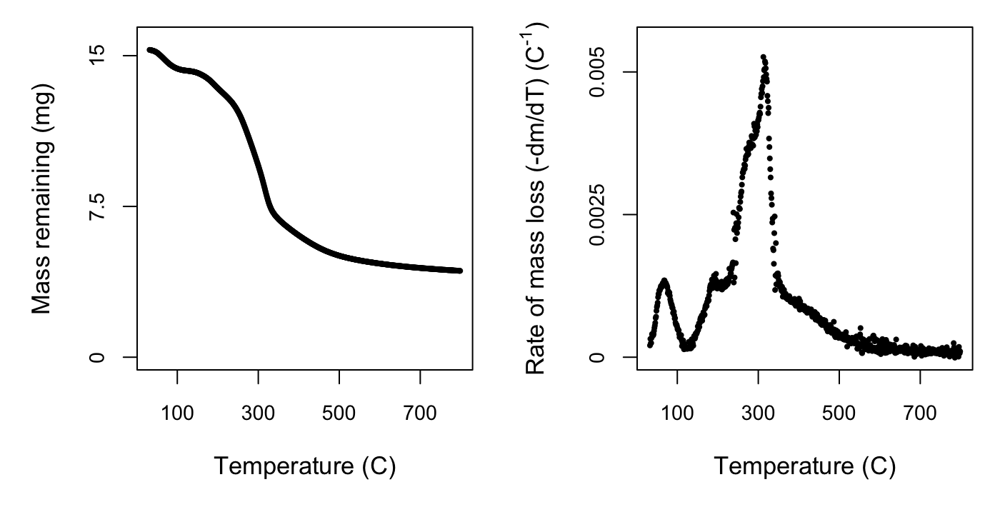
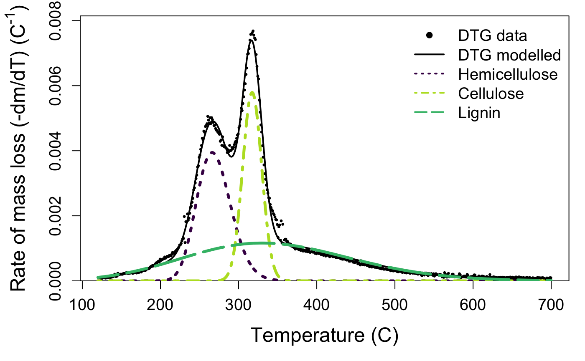
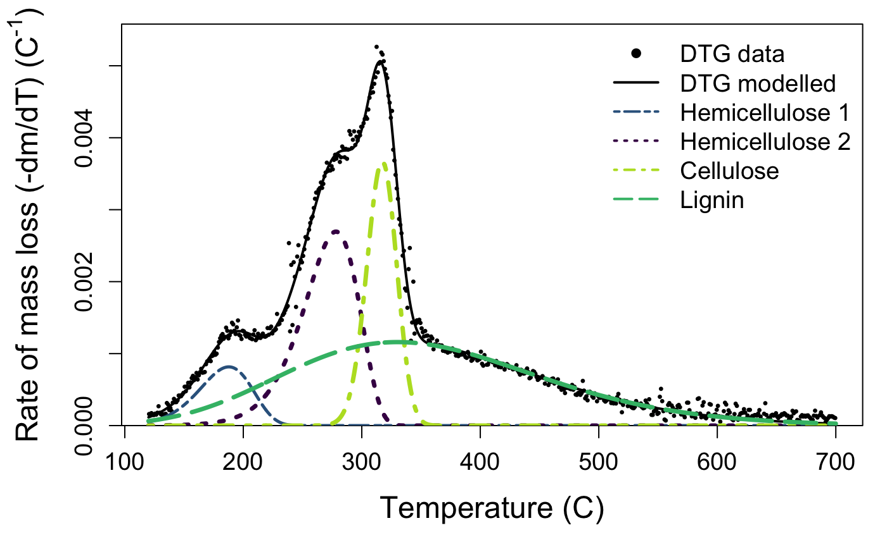

The first step is to load the data derived from the thermogravimetric analysis into R. This step will vary depending on the format of your exported data. Two of many options for reading data are read.csv() for .csv files and read.table() for .txt files. Both of these functions also have a skip argument, in which you can tell R to begin reading data from a certain line, useful if the exported data has several lines of metadata at the top. You may also then have to assign column names. For example:
my_data <- read.csv('your_file_path_here.csv', header = FALSE, skip = 15)
colnames(c('temperature_C', 'mass_mg'))More information about reading data into R can be found here.
This package was developed using data from a Netzsch TGA-FTIR thermogravimetric analyser. We have included two example datasets in this package, called juncus and marsilea, that we will use for this demonstration. The juncus dataset contains theromogravimetric data for a sample of the freshwater reed, Juncus amabilis, and marsilea contains data for the freshwater fern, Marsilea drumondii.
library(mixchar)
head(juncus)## temp_C mass_loss
## 1 31.453 -0.000931
## 2 31.452 -0.001340
## 3 31.450 -0.001350
## 4 31.450 -0.001660
## 5 31.450 -0.001680
## 6 31.450 -0.001800process dataAfter we’ve loaded our data, can use the function process() to take the derivative of this data, resulting in rate of mass loss over temperature data. This produces the multi-peaked rate of decay curve that we will apply the mixture model to. The process function needs the dataset, the initial mass of sample, the name of the temperature data column, and the name of your mass column (mg). Mass might be recorded in your exported dataset in different ways:
juncus dataset, you can specify the column name using the mass_loss argument.mass argument.process function. But make sure the argument matches the kind of data!The function defaults to temperature data in Celsius, but you can also modify to indicate the data is provided in Kelvin, by specifying the argument temp_units = 'K'.
deriv_juncus <- process(juncus, # dataframe name
init_mass = 18.96,
temp = 'temp_C', # column name for temperature
mass_loss = 'mass_loss') # column name for mass loss data
deriv_juncus## Derivative thermogravimetry data (DTG) calculated for
## 768 datapoints from 31.5 to 798.52 degrees C.deriv_marsilea <- process(marsilea,
init_mass = 15.29,
temp = 'temp_C',
mass_loss = 'mass_loss')
deriv_marsilea## Derivative thermogravimetry data (DTG) calculated for
## 768 datapoints from 31.5 to 798.51 degrees C.At this point we can take a look at what we’ve done so far using the default plotting option for the processed data. If you plot() the output of the process function, you will get two curves: the mass of sample across time and the rate of mass loss curve. If you’re only interested in one plot, you can specify plot_type = 'mass' or plot_type = 'rate'. You can also specify a size factor using cex.
The rate of mass loss curve helps us to visualise the three stages of mass loss:
In the next step we will crop the data to include only phase 2, so visualising your own data is important to check that the default temperature bounds will be suitable, in case for example the dehydration phase extends past 120 \(^{\circ}\)C or ends earlier. Comparing the plots for the two species we can see similarities in the shape and location of the peaks of the overall rate of mass loss curve, but also subtle differences. It is these characteristics we will tease apart using the nonlinear mixture model in the next step.
plot(deriv_juncus, cex = 0.9)plot(deriv_marsilea, cex = 0.9)
deconvolve dataThe decovolve function takes care of modelling the rate of mass loss data with the nonlinear mixture model. To do so it first crops to the second phase, as mentioned above, to default temperature bounds of 120 \(^{\circ}\)C and 700 \(^{\circ}\)C. These can be modified with the lower_temp and upper_temp arguments. Although most biomass samples have only three main components (corresponding to hemicellulose, cellulose, and lignin), some have a second hemicellulose peak in the low temperature range. deconvolve will decide whether three or four peaks are best using an internal function that determines if there is a peak below 220 \(^{\circ}\)C. Upon inspection of your curve you can override this by modifying the n_peaks argument. The function also has built in starting values for the nonlinear optimisation. These values were tested on litter from 30 plant species, encompassing herbaceous, graminoid, as well as woody species. However, if they do not work for your sample, or you would like to play with the effect of changing them, you can do so with the start_vec, lower_vec, and upper_vec arguments.
output_juncus <- deconvolve(deriv_juncus)
output_juncus## Deconvolution by -part Fraser-Suzuki mixture model fitted to
## 580 datapoints from 120 to 700 degrees C.# here's an example of specifying your starting vector.
# the order of values is height, skew, position, then width
my_starting_vec <- c(height_0 = 0.002, skew_0 = -0.15, position_0 = 210, width_0 = 50,
height_1 = 0.003, skew_1 = -0.15, position_1 = 250, width_1 = 50,
height_2 = 0.006, skew_2 = -0.15, position_2 = 320, width_2 = 30,
height_3 = 0.001, skew_3 = -0.15, position_3 = 390, width_3 = 200)
output_marsilea <- deconvolve(deriv_marsilea, n_peaks = 4, start_vec = my_starting_vec)
output_marsilea## Deconvolution by -part Fraser-Suzuki mixture model fitted to
## 580 datapoints from 120 to 700 degrees C.deconvolve results in a few different outputs that you can retrieve with accessor functions.
rate_data() will show you the processed dataset that results from the process function, useful if you want to play around with other modelling approaches or plotting options:juncus_rate <- rate_data(output_juncus)
head(juncus_rate)## temp_C deriv mass_T
## 5325 120.514 9.570652e-05 17.91630
## 5384 121.501 9.885901e-05 17.91445
## 5445 122.515 1.003878e-04 17.91252
## 5505 123.514 9.133606e-05 17.91079
## 5565 124.513 6.493836e-05 17.90956
## 5625 125.509 8.578618e-05 17.90794*temp_bounds() will print the temperature values at which the data were cropped for analysis:
temp_bounds(output_juncus)## [1] 120 700model_fit() will show you the output of the mixture model and estimated parameter values for height, skew, position, and width for each peak. Peak 1 is hemicellulose, peak 2 is cellulose, and peak 3 is lignin. If present, the optional fourth peak located at the lowest temperature interval will be listed as peak 0:model_fit(output_juncus)## Nonlinear regression model
## model: deriv ~ fs_mixture(temp_C, height_1, skew_1, position_1, width_1, height_2, skew_2, position_2, width_2, height_3, skew_3, position_3, width_3)
## data: dataframe
## height_1 skew_1 position_1 width_1 height_2 skew_2
## 3.944e-03 1.258e-01 2.662e+02 5.106e+01 5.793e-03 1.344e-02
## position_2 width_2 height_3 skew_3 position_3 width_3
## 3.173e+02 2.866e+01 1.163e-03 1.085e-01 3.300e+02 2.500e+02
## residual sum-of-squares: 9.299e-06
##
## Number of iterations to convergence: 23
## Achieved convergence tolerance: 1.49e-08model_fit(output_marsilea)## Nonlinear regression model
## model: deriv ~ fs_mixture(temp_C, height_1, skew_1, position_1, width_1, height_2, skew_2, position_2, width_2, height_3, skew_3, position_3, width_3, height_0, skew_0, position_0, width_0)
## data: dataframe
## height_0 skew_0 position_0 width_0 height_1 skew_1
## 0.000816 -0.232926 187.779162 53.030500 0.002695 -0.330000
## position_1 width_1 height_2 skew_2 position_2 width_2
## 278.179206 54.575596 0.003670 -0.055013 317.234476 29.662293
## height_3 skew_3 position_3 width_3
## 0.001160 0.200000 330.000000 250.000000
## residual sum-of-squares: 6.336e-06
##
## Number of iterations to convergence: 25
## Achieved convergence tolerance: 1.49e-08component_weights() will display the mean, upper, and lower confidence intervals for each estimated component:component_weights(output_juncus)## HC CL LG value_type
## 1 21.560043 17.6748678 30.6629878 mean
## 2 20.432730 16.6433644 29.5201885 2.5%
## 3 21.598042 17.6367413 30.6535146 50%
## 4 22.757509 18.6700531 31.8302165 97.5%
## 5 0.597823 0.5128314 0.5914669 5component_weights(output_marsilea)## HC_1 HC_2 CL LG value_type
## 1 4.625424 16.281260 11.601421 31.009216 mean
## 2 2.664669 9.124988 3.885893 24.840613 2.5%
## 3 4.555857 16.317489 11.763706 31.052828 50%
## 4 6.922566 27.118057 22.561010 36.140566 97.5%
## 5 1.114594 4.434649 4.829690 3.013464 5The default plotting function for the output of the deconvolve function shows you your raw mass data, the estimated full curve from the mixture model, and also plots the individual component peaks using their parameter estimates from the model. The default plot is in black and white, but you can plot a colour version that uses colour-blind friendly viridis colours by specifying bw = FALSE.
Take a look at your plot. Do the estimates seem reasonable?
plot(output_juncus, bw = FALSE)
plot(output_marsilea, bw = FALSE)
If the estimated peaks do not match your data well, it may be that your sample is a bit different than those used to develop the package. That’s not a problem, but you may need to try the deconvolution again with different starting values. If you aren’t managing to produce reasonable estimates, get in touch with us via the issues page.
If you want to modify the aesthetics of this plot for your own work, then you can access the parameter estimates as follows:
fit_juncus <- model_fit(output_juncus)
params <- as.data.frame(summary(fit_juncus)$coefficients[,1])and use fs_function() to plot individual component peaks, and fs_mixture function to plot the overall mixture curve.
To read more about the methodology, check out the Detailed Methodology article.